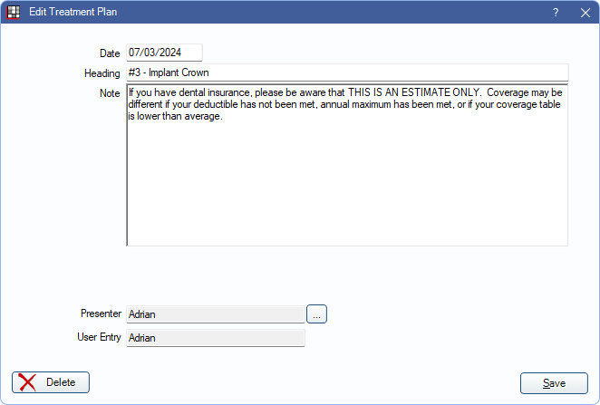
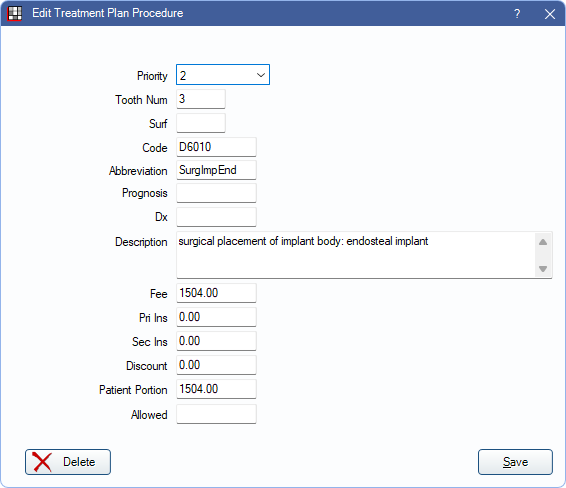
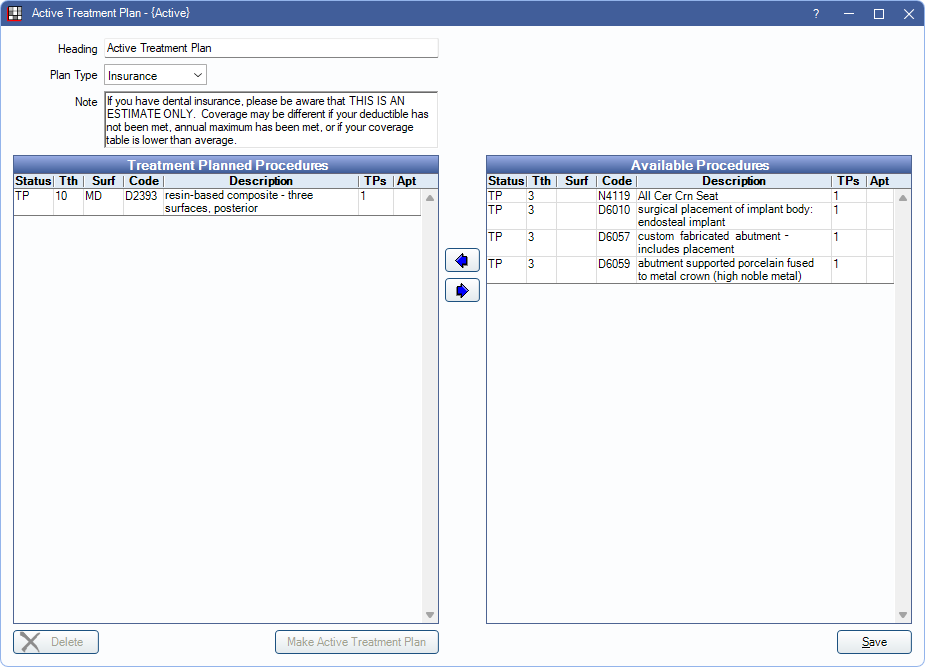

Edit Treatment Plan
In the Treatment Plan Module, double-click any of the inactive, active, or saved Treatment Plans to edit.

There are multiple types of treatment plans, each with their own designated usage.
Saved Treatment Plans
Saved Treatment Plans are designed to track treatment the patient has accepted. It can track acceptance rate and retains the fee information for the date it was saved. Saved treatment plans can also be used as one way to display treatment options (e.g. bridge vs implant).
To save a treatment plan:
- In the Treatment Plan, highlight the accepted procedures or treatment options, then click Save TP.
- If Prompt to save Treatment Plans is checked in Preferences, a popup will appear to rename the Saved Treatment Plan. Rename as needed.
- Once saved, the Saved Treatment Plan will appear at the top of the Treatment Plan Module with a status of Saved.
- Saved treatment plans can be viewed or printed anytime.
- Procedure fees within a Saved Treatment Plan are not affected by the Update Fees tool.
Double-click a Saved Treatment Plan to edit the date, heading, note, responsible party, and presenter information. Once a saved plan is electronically signed, it cannot be edited unless the signature is cleared.
Modify the information as needed:
- Date: The date of the treatment plan.
- Note: The note that typically appears at the bottom of the treatment plan. Set the Default Note in Preferences. This text box supports Right-Click Options.
- Responsible Party: Only visible if Public Health is turned on in Show Features. Click Pick to select the person, other than the patient or guarantor, who is responsible for approving the treatment plan. Click X to clear a name.
- Saved Document: Only displays when the treatment plan has been signed and saved as a PDF. Click View to open the treatment plan. To always save treatment plans as PDF files, enable the preference, Save Signed Treatment Plans to PDF. When treatment plans are saved as PDF, they are automatically named. Users can rename the file from the Imaging Module.
- Presenter: The user who presented the treatment plan. Defaults to the logged-on user. Click [...] to select a different presenter. Presenter options include all users, or, users who are associated with the clinic.
- User Entry: The user logged on when the treatment plan was saved. Cannot be changed.
- Delete: Click to delete the Saved Treatment Plan.
- Clear Signature: Click to clear the signature. Once cleared, edits can be made.
When a treatment plan is saved, edits can be made to individual procedures as needed without affecting the original procedure. Select a Saved Treatment Plan, then double-click a procedure.
Only procedures on unsigned treatment plans can be edited. Editing procedure information (e.g., Priority) for saved treatment does not affect the order procedures are listed in the Saved Treatment Plan. Procedures remain in the same order as they were when saved.
Active/Inactive Plans
An Active Treatment Plan displays treatment charted for the patient that has not been completed. Use Inactive Treatment Plans to keep a record of treatment the patient denied. Inactive Treatment Plans are also another way to present treatment options to a patient (e.g. bridge vs implant).
To inactivate procedures (denied treatment):
- In the treatment plans grid, double-click the active treatment plan.
 - Using the left and right arrows, move denied treatment to the Available Procedures column on the right.
- This will mark the procedures with a TPi status (Treatment Plan Inactive).
- Procedures with a status of TPi do not display in the Chart Module, tooth chart, or Active Treatment Plans.
- Click Save to move the treatment to the Unassigned Inactive Treatment Plan.
- If there is no existing Unassigned Treatment Plan, a new one is added to the Treatment Plans grid.
- Inactive Treatment Plans display in the Treatment Plans grid and can be viewed anytime.
- Optional: Assign treatment to a treatment plan to access additional editing options.
- In the Treatment Plan, click New TP.
- Select the procedures with status of TPi.
- Using the left and right arrows, move denied treatment to the Treatment Planned Procedures column on the left.
- Click Save to create the new treatment plan.
To create treatment options:
- In the Treatment Plan, click New TP.
- In the Active Treatment Plan window, use the left and right arrows to move the treatment option to the left column (Treatment Planned Procedures).
- Click OK to save.
- A new treatment plan with a status of Inactive will display in the Treatment Plans grid.
- Treatment Options saved as Inactive Treatments plans cannot be signed.
- Fees in an Inactive Treatment Plan are affected by the Update Fees tool.
- All treatment will still list in the Active Treatment Plan.
- Once treatment has been decided by the patient, save the treatment as a Saved Treatment Plan. The alternate treatment should have the procedures deleted or inactivated.
To make treatment active:
- Double-click an Inactive Treatment Plan.
- Move any treatment to the left column (Treatment Planned Procedures) if needed, then click Make Active Treatment Plan.
- Click OK to save.
- The previous Active Treatment Plan will change to Inactive.
- Alternatively, double-click the Active Treatment Plan and move any treatment to the left column (Treatment Planned Procedures). Click OK to save.
Inactive Treatment Plans can be edited as needed. Double-click a plan to edit:
- Heading: The title of the treatment plan. It will appear at the top of printed and emailed plans.
- Plan Type: Indicates Discount or Insurance based on patient's plan type. If no insurance or discount plan is listed for patient, will default to Insurance.
- Note: The note that will appear at the bottom of the treatment plan. Set the Default Note in Preferences.
- Treatment Planned Procedures Grid displays active treatment.
- Available Procedures Grid displays procedures available to choose from (including inactive procedures).
- S: Procedure attached to a scheduled appointment
- B: Procedure attached to a broken appointment
- U: Procedure attached to an appointment on the Unscheduled List
- P: Procedure attached to a planned appointment
- SP: Procedure attached to a scheduled and planned appointment
- UP: Procedure attached to a planned appointment and appointment on the Unscheduled List
- BP: Procedure attached to a broken and planned appointment
- Delete: Click to delete the inactive treatment plan only. Procedures will not be deleted. TP status procedures remain in the active treatment plan. TPi status procedures are moved to an Unassigned inactive treatment plan.
- Make Active Treatment Plan: Click to make the plan active.